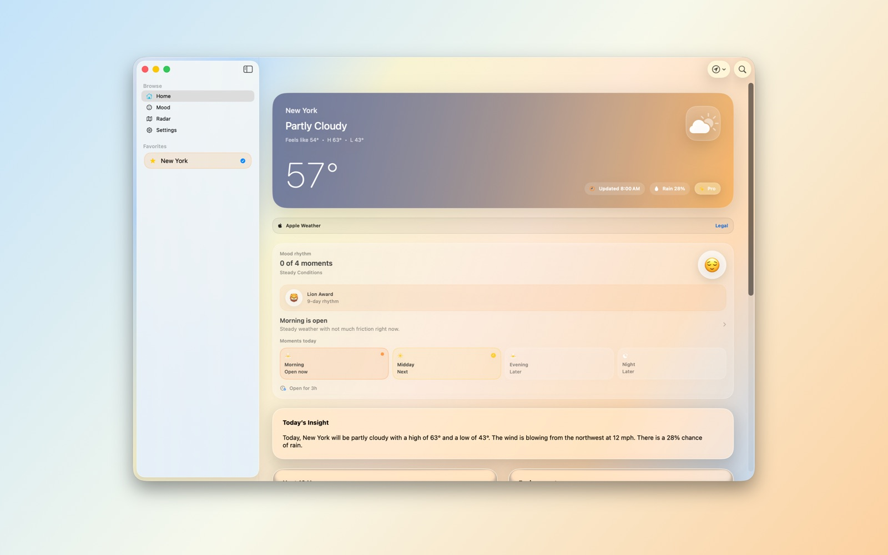

Clean forecasts
Current conditions, hourly forecasts, daily forecasts, and feels-like temperature in a clear layout.
Clean forecasts, real-time radar, and daily insights across your Apple devices.
A calm weather app for Mac, iPhone, iPad, Apple Watch, and Apple Vision Pro, with optional Mood Rhythm awareness and Aura Pro weather-map upgrades.

Aura Sky keeps the main surface focused on practical weather, radar, and daily context, then layers in personal rhythm only when it helps.
Current conditions, hourly forecasts, daily forecasts, and feels-like temperature in a clear layout.
Track rain and changing conditions with a clear radar map. Aura Pro unlocks playback and premium layers.
Get a simple summary of the day’s weather so you can plan with less effort.
Optionally log how you feel and see patterns connected to your environment.

Aura Pro is optional. Pricing, trial eligibility, and renewal terms are shown before purchase in the App Store purchase flow.
The interface adapts across desktop, phone, tablet, wrist, and spatial surfaces while keeping weather easy to scan.
Desktop weather, radar, and planning context.
Fast forecasts and location-aware daily weather.
Room for forecast, mood, and radar surfaces.
Glanceable weather, complications, and check-ins.
A spatial weather surface for the same Aura Sky experience.
Aura Sky is designed for everyday weather awareness. It is not a certified source for aviation, dispatch, navigation, safety-critical weather briefing, or operational decision-making.